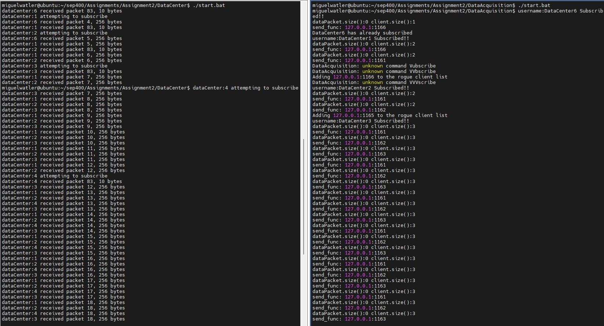
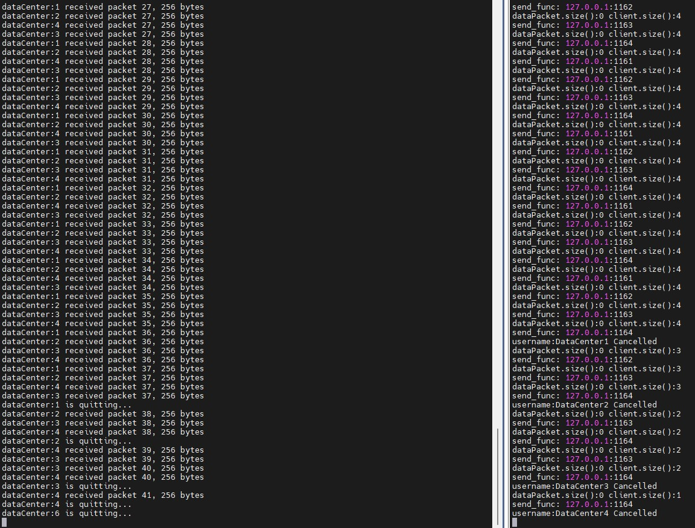

SEP400 - Assignment 2: Seismic Data Acquisition Unit
Due: Friday, April 14, 2023
Business Case (Marketing, Project Manager, Senior Executives)
The release of energy associated with earthquakes generates seismic waves that propagate through the
Earth and along the Earth's surface across large distances. Most earthquakes are the result of plate tectonic processes.
The geological monitoring of the Earth's surface provides guidance for determining the status and trends of geological
activity, and to further the understanding of how geologic processes impact our ecosystem.
A transducer has been purchased by our company, which converts seismic waves into streams of binary data. This data has to reach our
data centers for analysis. We need a data acquisition unit that will collect data from our transducer and transmit these data
over the network to data centers. In doing so, our data acquisition unit must protect against rogue data centers which might
attempt to steal the data or disrupt network communications.
The purpose of this project is therefore to write software for the data acquisition unit given the transducer
and data centers.
Requirements (Marketing, Project Manager, Project Lead)
- The data acquisition unit must quickly retrieve the data from the transducer.
- The data acquisition unit must accept subscription requests from data centers through password authentication.
- The data acquisition unit must quickly transmit all data to all subscribed data centers (losing some data is acceptable).
- The data acquisition unit must protect against any rogue process that attempts to guess the subscription password by brute force.
- The data acquisition unit must protect against any rogue process that attempts a denial of service attack by spamming the data acquisition unit with
large amounts of data.
Design (Project Lead, Senior Engineers)
The Transducer:
- The manufacturers of the transducer are aware of the requirement for quick data transfer, therefore have designed the transducer
to write streams of data into shared memory.
- The transducer therefore allows the software for the data acquistion unit to run on the transducer so they can share memory.
- The transducer data streams are of fixed length. Metadata (data about the data) is included with each data stream.
- The transducer data streams are written into a finite area of memory. They therefore overwrite each other after a while.
The Seismic Data Acquisition Unit:
- The seismic data acquisition unit retrieves data from the transducer through shared memory.
- The seismic data acquisition unit synchronizes its data retrieval with the transducer's data write.
- The IP address of the seismic data acquisition unit is known to all data centers.
- The seismic data acquisition unit uses INET datagram sockets to accept subscriptions from data centers with authentication via password.
- The seismic data acquisition unit uses INET datagram sockets to transmit streams of seismic data to all subscribed data centers.
- The seismic data acquisition unit uses mutex'es to synchronize its data retrieval via INET datagram sockets with its data transmit via INET datagram sockets.
- The seismic data acquisition unit keeps track of the history of data center activity to detect rogue data centers which might try to guess the
password by brute force.
- The seismic data acquisition unit keeps track of the history of data center activity to detect rogue data centers which might try to overwhelm it with
massive amounts of data.
- The seismic data acquisition unit uses INET datagram sockets to accept cancellation of a data center's subscription.
The Data Center:
- The data center attempts to authenticate with the data acquisition unit using INET datagram sockets by providing a data stream consisting of the username and password.
- If authentication fails, the data center will try again after 5 seconds.
- Once authenticated, the data center will retrieve data for 30 seconds from the data acquistion unit using INET datagram sockets, then cancel its subscription.
Implementation (Junior and Senior Engineers)
The Transducer:
- The transducer writes 1 packet of seismic data into shared memory each second along with a packet number. The shared memory can store upt to 2096 packets of seismic
data before overwriting itself. Each packet of seismic data consists of a status byte (NOT_READY, READ, WRITTEN), a packet length byte and 256 bytes of data.
- Synchronization between the transducer and the data acquisition unit is by the status byte and by semaphores.
- When the transducer writes to shared memory, it sets the status byte to WRITTEN. When the data acquisition unit reads the data, the status byte is set to READ.
- The transducer performs a controlled shutdown on ctrl-C.
- The source code for the transducer as well as the Makefile for the transducer and the data acquisition unit can be found at:
SeismicData.h,
Transducer.h,
Transducer.cpp and
TransducerMain.cpp.
The Makefile as well as start and stop batch files can be found at:
Makefile,
start.bat and
stop.bat.
The Seismic Data Acquisition Unit:
NOTE: The focus of this project is the seismic data acquisition unit. This software you will have to write from scratch. Code and Makefiles
for the transducer and data centers have been given to you, as well as start and stop batch files.
- The shared memory:
- Before the data acquisition unit reads from shared memory, it has to ensure that the status of the packet in shared memory is set to WRITTEN.
- When the data acquisition unit reads the data, the status byte is set to READ.
- .
- The synchronization mechanism between the transducer and the data acquisition unit is through the status byte and semaphores.
- The data acquisition unit will take each packet of data from shared memory and push it on to a queue of a structure that contains the
length of the packet, the packet number, and the seismic data. Call this structure DataPacket.
- After reading from shared memory, the data acquisition unit should sleep for 1 second.
- In addition to communicating with the transducer, the data acquisition unit must communicate with data centers that have subscribed to it.
- The data acquisition unit will communicate with the data centers via INET DATA_GRAM sockets. You can make these sockets NON-BLOCKING if you wish.
- Be sure to bind your data acquisition unit to the address 127.0.0.1:1153. You can change this address if you wish.
- The data acquisition unit will have a read thread for authenticating data centers.
- The data acquisition unit will have a write thread to write seismic data to all subscribed data centers.
- The data acquisition unit will use mutexing to synchronize the data received from the transducer (push to a queue) with the data written to the
data centers (front/pop from the queue).
- The data center expects the following information: first byte: packet number, second byte: length of the data, remaining bytes: the data.
- The read thread:
- For the read thread, for authentication the data center will send a CSV stream of data with the following format: "Subscribe",<username>,"Leaf"
The password is "Leaf".
- On successful subscription, the data acquisition unit replies "Subscribed" and prints out a message that the data center has subscribed.
- For the read thread, when a data center wishes to unsubscribe, it will send the following CSV stream of data: "Cancel",<username>
- On unsubscribe, the data acquisition unit will remove the data center from the list of data centers and print out a message that the data center has unsubscribed.
- The data acquisition unit therefore has to keep a list of subscribers. The data structure for a subscriber should have the subscriber's username,
IP address and port.
- For the read thread, the data acquisition unit has to handle denial of service attacts. This occurs when a rogue data center sends massive amounts
of data to the data acquisition unit hoping to crash the unit.
- For the read thread, the data acquisition unit has to handle a brute force attack by a rogue data center that wishes to guess the password.
- Detecting a rogue data center can be made easy by tracking the IP address of the last three data centers to send data to the data acquisition unit.
If the IP addresses are all the same, chances are a rogue data center is trying to guess the password or is trying to overwhelm the data acquisition
unit.
- The data acquisition unit should therefore keep a list of the IP addresses of all rogue data centers. The data structure for a rogue data center would
be the same as for a valid data center.
- Whenever data from a rogue center arrives, just throw it away.
- The write thread:
- The write thread will "front" and "pop" from the queue of DataPacket's.
- The write thread will send each packet from DataPacket and send to each on the list of data centers.
- After sending all pending packets to all clients, the write thread will sleep for 1 second.
- The data acquisition unit should perform a controlled shutdown on ctrl-C.
The Data Center:
- The data center will be invoked with a client number. This client number is used in determining the IP port for each data center.
- Normally the data center would be on another network far away from the transducer and data acquisition unit. For the purposes of this
assignment, let's assume they are all on the same machine.
- The address of the first data center will be 127.0.0.1:1161, the second 127.0.0.1:1162, the third 127.0.0.1:1163, etc...
- The data center knows the address of the server, which is currently hardcoded to 127.0.0.1:1153. You can change this address if you wish.
- Each data center attempts to subscribe by sending the following CSV data to the server: Subscribe,DataCenter<dataCenterNumber>,Leaf
- Once it subscribes, it reads data for 30 seconds, then sends a cancel message to the server: Cancel,DataCenter<dataCenterNumber>
- The read thread is used to detect authentication, as well as to extract packet data.
- Source code for the data center can be found at:
DataCenter.h,
DataCenter.cpp and
DataCenterMain.cpp.
- Two rogue data centers have been created. The first will attempt to guess the password. The source code for data center rogue1 can be found at:
DataCenterRogue1.h,
DataCenterRogue1.cpp and
DataCenterRogue1Main.cpp.
- The second rogue data center knows the password and attempts to overwhelm the data acquisition unit with a denial of service attack.
Source code for data center rogue2 can be found at:
DataCenterRogue2.h,
DataCenterRogue2.cpp and
DataCenterRogue2Main.cpp.
- The Makefile as well as start and stop batch files for all data centers can be found at:
Makefile,
start.bat and
stop.bat.
Testing and Rework (Junior and Senior Engineers, Product Support)
- To test the system, code and binaries for the data acquisition unit and the transducer should be in one directory, and code
and binaries for the data center in another directory.
- The start batch file for the transducer and data acquisition unit should be run first, and shortly after the start batch file
for the data centers.
- The start batch file for the data centers will run 4 valid data centers and two rogue data centers.
- Once communications have been established, you should see data centers 1-4 receiving data from the data center acquisition unit.
Data centers 5 and 6 should be blocked.
- After 30 seconds all data centers shut down.
- A sample run at the beginning of the operations should look as follows:

- A sample run at the end of the operations should look as follows:

Questions
- Is it necessary to synchronize the transducer and the data center acquisition unit with both semaphores as well as a status byte?
- How big is the shared memory in bytes?
- When writing operating systems code, do you prefer to use object oriented programming with classes or do you prefer using C++ as an extended
C with global variables inside the CPP file? Why?
- For this prject, what are the advantages and disadvantages of using datagrams for our network communications?
- How would you resolve a situation where a valid client ended up on the rogue list?
- Should the data passing between the data acquisition unit and the data centers be encrypted? Why?
Timeline
Days 1-7: Establish communications between the data acquisition unit and the transducer.
Days 8-14: Establish communications between the data acquisition unit and the data centers.
Days 15-21: Test and Rework. Answer questions. Submit assignment.
Marking Rubric
Assignment 2 is worth 15% of your final grade and as such is marked out of 15 as follows:
| Does not meet expectations | Satisfactory | Good | Exceeds Expectations |
|---|
Data Acquistion Unit/ Transducer: Communications
(4 marks) | Does not meet requirements | Meets the most important requirements | Meets all requirements with minor errors | Meets all requirements with no errors |
Data Acquistion Unit/ Data Center: Communications
(4 marks) | Does not meet requirements | Meets the most important requirements | Meets all requirements with minor errors | Meets all requirements with no errors |
Data Acquistion Unit/ Data Center: Security
(4 marks) | Does not meet requirements | Meets the most important requirements | Meets all requirements with minor errors | Meets all requirements with no errors |
Documentation
(1 marks) | Does not contain documentation | Contains header documentation for either all files or for all functions within each file |
Contains header documentation for all files and for most functions within each file | Contains header documentation for all files and for all functions within each file.
Documents unclear code. |
Questions
(2 marks) | Answers no question correctly | Answers some questions correctly |
Answers most questions correctly | Answers all Questions correctly |
Submission
Please email all source code and answers to questions to:
miguel.watler@senecacollege.ca
NB: My last name is Watler, not Walter.
Your questions can be submitted in a separate document or embedded within your source code.
Late Policy
You will be docked 10% if your assignment is submitted 1-2 days late.
You will be docked 20% if your assignment is submitted 3-4 days late.
You will be docked 30% if your assignment is submitted 5-6 days late.
You will be docked 40% if your assignment is submitted 7-8 days late.
You will be docked 50% if your assignment is submitted over 8 days late.